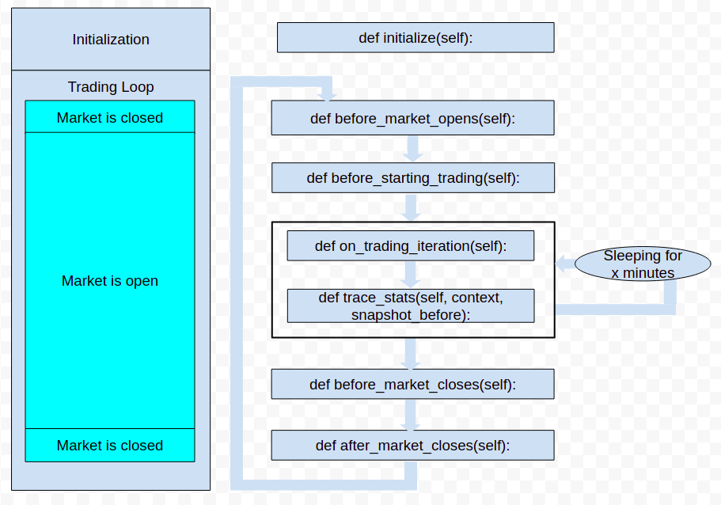

Lifecycle Methods¶
The abstract class Strategy defines a design pattern that needs to be followed by user-defined strategies. The design pattern was greatly influenced by React.js components and their lifecycle methods.
When building strategies, lifecycle methods needs to be overloaded. Trading logics should be implemented in these methods.
Initialize¶
def initialize(self):
This lifecycle methods is executed only once, when the strategy execution starts. Use this lifecycle method to initialize parameters like:
self.sleeptime: the sleeptime duration between each trading iteration in minutes
self.minutes_before_closing: number of minutes before the market closes to stop trading
class MyStrategy(Strategy):
def initialize(self, my_custom_parameter=True):
self.sleeptime = 5
self.minutes_before_closing = 15
self.my_custom_parameter = my_custom_parameter
Custom Parameters
You can also use the initialize method to define custom parameters like my_custom_parameter in the example above. You can name these parameters however you’d like, and add as many as you’d like.
These parameters can easily be set using the strategy constructor later on.
strategy_1 = MyStrategy(
name="strategy_1",
budget=budget,
broker=broker,
my_custom_parameter=False,
my_other_parameter=50
)
strategy_2 = MyStrategy(
name="strategy_2",
budget=budget,
broker=broker,
my_custom_parameter=True,
my_last_parameter="SPY"
)
or just for backtesting
options = [True, False]
for option in options:
MyStrategy.backtest(
budget,
YahooDataBacktesting,
backtesting_start,
backtesting_end,
stats_file=stats_file,
my_custom_parameter=option,
my_last_parameter="SPY"
)
# `options` in this example is not referring to trading options contracts.
Changing Market Hours
If you’d like to change the market hours for which the bot operates, then you can use the set_market() function like this:
def initialize(self, asset_symbol="MNQ", expiration=datetime.date(2021, 9, 17)):
self.set_market('24/7')
Default is NASDAQ days and hours.
Possible calendars include:
['MarketCalendar', 'ASX', 'BMF', 'CFE', 'NYSE', 'stock', 'NASDAQ', 'BATS', 'CME_Equity', 'CBOT_Equity', 'CME_Agriculture', 'CBOT_Agriculture', 'COMEX_Agriculture', 'NYMEX_Agriculture', 'CME_Rate', 'CBOT_Rate', 'CME_InterestRate', 'CBOT_InterestRate', 'CME_Bond', 'CBOT_Bond', 'EUREX', 'HKEX', 'ICE', 'ICEUS', 'NYFE', 'JPX', 'LSE', 'OSE', 'SIX', 'SSE', 'TSX', 'TSXV', 'BSE', 'TASE', 'TradingCalendar', 'ASEX', 'BVMF', 'CMES', 'IEPA', 'XAMS', 'XASX', 'XBKK', 'XBOG', 'XBOM', 'XBRU', 'XBUD', 'XBUE', 'XCBF', 'XCSE', 'XDUB', 'XFRA', 'XETR', 'XHEL', 'XHKG', 'XICE', 'XIDX', 'XIST', 'XJSE', 'XKAR', 'XKLS', 'XKRX', 'XLIM', 'XLIS', 'XLON', 'XMAD', 'XMEX', 'XMIL', 'XMOS', 'XNYS', 'XNZE', 'XOSL', 'XPAR', 'XPHS', 'XPRA', 'XSES', 'XSGO', 'XSHG', 'XSTO', 'XSWX', 'XTAE', 'XTAI', 'XTKS', 'XTSE', 'XWAR', 'XWBO', 'us_futures', '24/7', '24/5']
Before Market Opens¶
def before_market_opens(self):
This lifecycle method is executed each day before market opens. If the strategy is first run when the market is already open, this method will be skipped the first day. Use this lifecycle methods to execute business logic before starting trading like canceling all open orders.
class MyStrategy(Strategy):
def before_market_opens(self):
self.cancel_open_orders()
def before_starting_trading()
This lifecycle method is similar to before_market_opens. However, unlike before_market_opens, this method will always be executed before starting trading even if the market is already open when the strategy was first launched. After the first execution, both methods will be executed in the following order
Before Starting Trading¶
def before_starting_trading(self):
Use this lifecycle method to reinitialize variables for day trading like resetting the list of blacklisted shares.
class MyStrategy(Strategy):
def before_starting_trading(self):
self.blacklist = []
On Trading Iteration¶
def on_trading_iteration(self):
This lifecycle method contains the main trading logic. When the market opens, it will be executed in a loop. After each iteration, the strategy will sleep for self.sleeptime minutes. If no crash or interuption, the loop will be stopped self.minutes_before_closing minutes before market closes and will restart on the next day when market opens again.
class MyStrategy(Strategy):
def on_trading_iteration(self):
# pull data
# check if should buy an asset based on data
# if condition, buy/sell asset
pass
Before Market Closes¶
def before_market_closes(self):
This lifecycle method is executed self.minutes_before_closing minutes before the market closes. Use this lifecycle method to execute business logic like selling shares and closing open orders.
class MyStrategy(Strategy):
def before_market_closes(self):
self.sell_all()
After Market Closes¶
def after_market_closes(self):
This lifecycle method is executed right after the market closes.
class MyStrategy(Strategy):
def after_market_closes(self):
pass
Trace Stats¶
def trace_stats(self):
Lifecycle method that will be executed after on_trading_iteration. context is a dictionary containing the result of locals() of on_trading_iteration() at the end of its execution.
locals() returns a dictionary of the variables defined in the scope where it is called.
Use this method to dump stats
import random
class MyStrategy(Strategy):
def on_trading_iteration(self):
google_symbol = "GOOG"
def trace_stats(self, context, snapshot_before):
print(context)
# printing
# { "google_symbol":"GOOG"}
random_number = random.randint(0, 100)
row = {"my_custom_stat": random_number}
return row
On Abrupt Closing¶
def on_abrupt_closing(self):
This lifecycle method runs when the strategy execution gets interrupted. Use this lifecycle method to execute code to stop trading gracefully like selling all assets
class MyStrategy(Strategy):
def on_abrupt_closing(self):
self.sell_all()
On Bot Crash¶
def on_bot_crash(self):
This lifecycle method runs when the strategy crashes. By default, if not overloaded, it calls on_abrupt_closing.
On New Order¶
def on_new_order(self):
This lifecycle method runs when a new order has been successfully submitted to the broker. Use this lifecycle event to execute code when the broker processes a new order.
Parameters:
order (Order): The corresponding order object processed
class MyStrategy(Strategy):
def on_new_order(self, order):
self.log_message("%r is currently being processed by the broker" % order)
On Canceled Order¶
def on_canceled_order(self):
The lifecycle method called when an order has been successfully canceled by the broker. Use this lifecycle event to execute code when an order has been canceled by the broker
Parameters:
order (Order): The corresponding order object that has been canceled
class MyStrategy(Strategy):
def on_canceled_order(self, order):
self.log_message("%r has been canceled by the broker" % order)
On Partially Filled Order¶
def on_partially_filled_order(self):
The lifecycle method called when an order has been partially filled by the broker. Use this lifecycle event to execute code when an order has been partially filled by the broker.
Parameters:
order (Order): The order object that is being processed by the broker price (float): The filled price quantity (int): The filled quantity multiplier (int): Options multiplier
class MyStrategy(Strategy):
def on_partially_filled_order(self, order, price, quantity, multiplier):
missing = order.quantity - quantity
self.log_message(f"{quantity} has been filled")
self.log_message(f"{quantity} waiting for the remaining {missing}")
On Filled Order¶
def on_filled_order(self):
The lifecycle method called when an order has been successfully filled by the broker. Use this lifecycle event to execute code when an order has been filled by the broker
Parameters:
position (Position): The updated position object related to the order symbol. If the strategy already holds 200 shares of SPY and 300 has just been filled, then position.quantity will be 500 shares otherwise if it is a new position, a new position object will be created and passed to this method. order (Order): The corresponding order object that has been filled price (float): The filled price quantity (int): The filled quantity multiplier (int): Options multiplier
class MyStrategy(Strategy):
def on_filled_order(self, position, order, price, quantity, multiplier):
if order.side == "sell":
self.log_message(f"{quantity} shares of {order.symbol} has been sold at {price}$")
elif order.side == "buy":
self.log_message(f"{quantity} shares of {order.symbol} has been bought at {price}$")
self.log_message(f"Currently holding {position.quantity} of {position.symbol}")